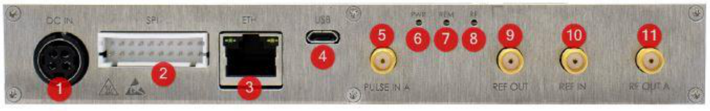
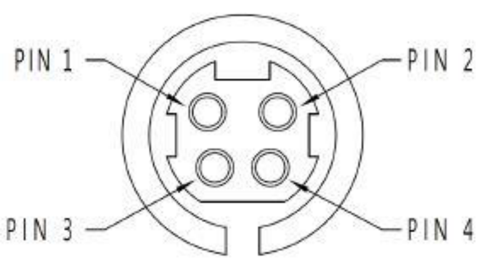
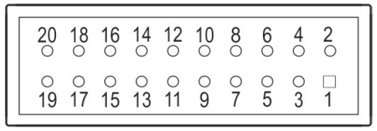
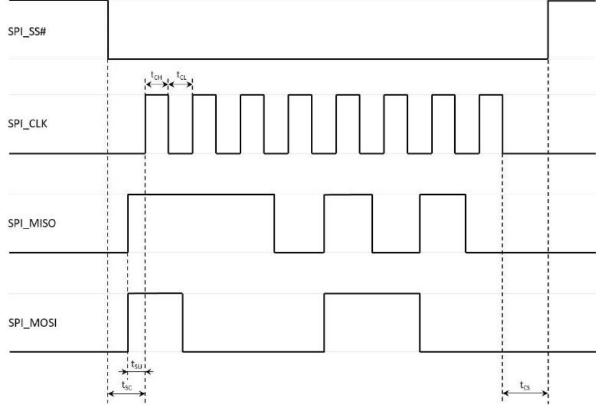

Warranty and Copyright
Warranty. Warranty is 1 Year standard, unless otherwise specified. Materials and workmanship, return to manufacturer included. Berkeley Nucleonics will, at its option, repair or replace products that prove to be defective during the warranty period, provided they are returned to Berkeley Nucleonics and provided the preventative maintenance procedures are followed. Repairs necessitated by misuse of the product are not covered by this warranty. No other warranties are expressed or implied, including but not limited to implied warranties of merchantability and fitness for a particular purpose. Berkeley Nucleonics is not liable for consequential damages. The warranty on the internal rechargeable batteries (option B3) is one year from the date of shipment. Battery replacement is available through Berkeley Nucleonics and its distributors.
Copyright. This manual is copyright by Berkeley Nucleonics and all rights are reserved. No portion of this document may be reproduced, copied, transmitted, transcribed, stored in a retrieval system, or translated in any form or by any means such as electronic, mechanical, magnetic, optical, chemical, manual or otherwise, without written permission of Berkeley Nucleonics.
1. General Remarks
The Model 805-SG microwave signal source modules deliver instrument-grade performance, increased functionality, and efficient power consumption at a reduced size and affordable cost. The design combines low phase noise with fast switching capability, covering a wide frequency range from 8 kHz up to 20 GHz. The low spurious and harmonic content of the signal makes it suitable for many demanding applications, such as research and development or manufacturing and testing of electronic components.
The unit contains a high-stability OCXO, providing accurate, power-calibrated, phase-lockable output signals. The frequency resolution is 1 mHz and the power resolution is 0.01 dB. The unit is remotely controlled with USB, LAN, or SPI control. Because of its form factor, the unit can also be used as a drop-in replacement for the obsolete QuickSyn FSW-0010 / FSW-0020 synthesizers from NI.
1.1 Validity of this Manual
This manual is valid for the following device and its options:
- 805-SG-1. 20 GHz wideband frequency synthesizer module.
- Option FS. Fast switching.
- Option 8K. Frequency range extension to 8 kHz.
- Option PULSE. Internal / external pulse modulation.
2. Form Factor
The Model 805-SG is supplied as a compact module. Unlike the rack and portable-case members of the 800-series family, it has no front-panel display: all control is through the remote interfaces on the connector panel.
For reference, the family module form factor (805-M) is shown below; the 805-SG shares this compact, passively cooled module concept.

3. Connections and Transportation
3.1 Data Connections
The device may only be connected to a network or a computer by using a shielded LAN cable. Unless shorter lengths are prescribed, a maximum length of 3 m must not be exceeded for the LAN and the USB connection. The SPI host should be connected with short, well-shielded wiring per the connector and timing definitions in Sections 9 and 10.
3.2 Signal Connections
In general, all connections between the signal source and another device should be made as short as possible and must be well shielded. It is recommended to use a high-quality cable with low loss, especially for frequencies above 20 GHz. The RF output, reference input, reference output, and PULSE trigger are SMA connectors.
3.3 Transportation
The device must only be transported with the packaging supplied by the manufacturer. The device can be lifted up or transported in any orientation.
4. Safety Information
The following pieces of information are important to prevent personal injury, loss of life or damage to the equipment. Please read them carefully. If the device is used in a manner not specified by this manual, the protection provided by the device may be impaired.
4.1 Signal Symbol
In this manual, the following symbols are used to warn the reader about risks and dangers.
4.2 Labels on Products
The following labels are on the products. Familiarize yourself with the meaning of each of the labels before using the product.
| Symbol | Meaning |
|---|---|
 | Direct Current (DC) |
 | Alternating Current (AC) |
 | Earth (Ground) |
 | EU label for separate collection of electrical and electronic waste. |
 | Caution, general danger zone. Attend the manual and/or a notice on the device. |
4.3 General Safety Considerations
FCC notice
This equipment has been tested and found to comply with the limits for a Class A device, pursuant to Part 15 of the FCC Rules. These limits are designed to provide reasonable protection against harmful interference when the equipment is operated in a commercial environment. This equipment generates, uses, and can radiate radio frequency energy and, if not installed and used in accordance with the instruction manual, may cause harmful interference to radio communications.
Operation of this equipment in a residential area may cause harmful interference in which case the user will be required to correct the interference at his or her expense.
 The Model 805-SG complies with applicable Safety and EMC regulations and directives. The instrument is CE marked.
The Model 805-SG complies with applicable Safety and EMC regulations and directives. The instrument is CE marked.5. Model 805-SG Key Specifications
The values below are drawn from the Model 805-SG datasheet, which is authoritative. Specifications describe warranted performance for 23 ±5 °C after a 30-minute warm-up, unless otherwise stated. Typical values are expected mean values, not warranted performance.
| Parameter | Value | Note |
|---|---|---|
| Frequency range | ||
| Standard | 10 MHz to 20 GHz | settable to 22 GHz |
| Option 8K | 8 kHz to 20 GHz | Frequency range extension |
| Frequency resolution | 0.001 Hz | GUI SW and SPI interface setting resolution |
| Frequency switching time | ||
| Typical | 500 µs | |
| Option FS | 15 µs typ. / 20 µs max. | Fast switching |
| Output power level | Settable to +25 dBm | |
| 8 kHz to 10 MHz | -20 dBm to 9 dBm | |
| 10 GHz to 20 GHz | -20 dBm to 15 dBm | |
| Power resolution | 0.01 dB | GUI SW; 0.1 dB SPI interface |
| Power level uncertainty | 0.25 dB typ. / 1.0 dB max. | -20 to 15 dBm |
| Output impedance / VSWR | 50 Ω / 1.7 typ. | |
| SSB phase noise (typical) | dBc/Hz | |
| 100 MHz carrier, 10 kHz offset | -155 dBc/Hz | at 20 kHz offset |
| 1 GHz carrier, 10 kHz offset | -147 dBc/Hz | at 20 kHz offset |
| 10 GHz carrier, 10 kHz offset | -130 dBc/Hz | at 20 kHz offset |
| 20 GHz carrier, 10 kHz offset | -125 dBc/Hz | at 20 kHz offset |
| Internal reference | OCXO | |
| Frequency | 100 MHz | |
| Calibrated accuracy | ±30 ppb | at 23 ±3 °C |
| Temperature stability (0 to 50 °C) | ±100 ppb | |
| Mechanical | ||
| Size (incl. connectors) | 7 x 5.4 x 1 in | W x L x H |
| Weight | < 2.4 lb | |
| Interfaces and power | ||
| Remote programming | Ethernet, USB 2.0, SPI | |
| Control language | SCPI Version 1999.0, native command set | |
| DC power | 12.0 to 30.0 VDC | 24 W typical |
| AC mains adapter (supplied) | 100-240 VAC in / 24 V, 2.7 A DC out | |
| Operating temperature | 0 to 60 °C | non-condensing, heatsink temperature |
| Storage temperature | -40 to 70 °C | |
| Recommended calibration cycle | 24 months |
The full specification set, including SSB phase noise across all offsets, harmonics, sub-harmonics, spurious, level linearity, modulation, sweep, and trigger tables, is on the Model 805-SG datasheet.
6. Introduction
This manual provides information for remote operation of the Model 805-SG-1 using commands sent from an external controller. The 805-SG can be controlled over Ethernet or USB using SCPI commands (shared with the 800-series family), or over its native SPI interface using the SPI command set described in this document.
For SPI control, this manual covers:
- A general description of the SPI hardware interface and its communication specifications.
- A complete listing and description of the native command set used to control signal-source operation, with examples of command usage.
7. Getting Started
7.1 Unpacking the Instrument
Remove the instrument materials from the shipping containers. Save the containers for future use. Inspect the shipping container for damage. If the container is damaged, retain it until the contents of the shipment have been verified against the packing list and the instrument has been inspected for mechanical and electrical operation.
7.2 Mounting the Module
Mount the module on a flat heatsinking surface using the 18× M2.5 mounting threads on the base. Make sure the module operates under the temperature and altitude conditions specified in the datasheet.
7.3 Applying Power
Supply DC power in the range 12.0 to 30.0 VDC (24 W typical) through the DC IN connector or, redundantly, through the DC IN pins of the SPI interface connector. When both are present, the supply with the higher voltage is selected. The supplied AC mains adapter accepts 100-240 VAC and provides 24 V, 2.7 A DC out.
7.4 Connecting for Remote Control
7.4.1 Ethernet (LAN)
Connect the module to your local area network using a shielded Ethernet cable on the ETH (RJ-45) port. By default, the instrument accepts a dynamic IP from the network DHCP server. Once an IP is assigned, the instrument is ready to receive remote SCPI commands. For a direct (no-router) connection, set the computer network controller to a static IP in the ZEROCONF range (169.254.x.x, network mask 255.255.0.0).
7.4.2 USB
Connect the module to the computer using a quality USB cable on the USB (Micro B) port. If properly connected, the operating system should install a USBTMC device. Use VISA Write to send the *IDN? query and VISA Read to get the response.
7.4.3 SPI
For SPI control, connect an SPI master host to the 20-pin SPI interface connector following the signal, pin, and timing definitions in Sections 9 and 10. The controlling host is the SPI master; the signal source is the SPI slave.
7.5 Power and Status Indicators
The module reports status through front-panel LEDs (PWR, REM, RF) and, over SPI, through the LOCK and REF_LOCK hardware lines and the Get Device Status query. See Section 8.
8. Connector Panel and Indicators
The 805-SG is a headless module. In place of a front-panel display and keypad, the connector panel carries the power, data, and RF connections plus three status LEDs.

| Label | Type | Description |
|---|---|---|
| 1. DC IN | KPJX-4S | DC input. Redundant power supply input to the SPI interface DC input (the supply with the higher voltage is chosen). |
| 2. SPI | DF1BZ-20DP-2.5DS | SPI interface, including DC input (see Section 9). |
| 3. ETH | RJ-45 | Ethernet port. |
| 4. USB | Micro B | USB port. |
| 5. PULSE | SMA | Trigger / Pulse interface, 100 kΩ pull-up to +5.0 V. |
| 6. PWR | LED | Power ON/OFF indicator. |
| 7. REM | LED | Remote connection status indicator. |
| 8. RF | LED | RF output ON/OFF indicator. |
| 9. REF OUT | SMA | Reference signal output. |
| 10. REF IN | SMA | Reference signal input. |
| 11. RF OUT | SMA | RF output. |
8.1 Power Connector Assembly
| Pin | Assignment |
|---|---|
| 1 | GND |
| 2 | DC Supply |
| 3 | GND |
| 4 | DC Supply |

The power connector is a 4-pin, snap-and-lock receptacle. BNC recommends Kycon-manufactured plugs KPPX-4P from its KPPX series.
9. SPI Hardware Interface
The Model 805-SG can be accessed through the SPI interface. This interface uses a native command set to pass commands to, and read queries from, the device. The SPI hardware interface consists of a standard SPI interface plus additionally assigned lines as defined below.
9.1 SPI Interface Connector

| Signal | Pin | Type | Description |
|---|---|---|---|
SPI_CLK | 11 | Input | SPI clock. Supplied by the controlling host. The controlling host is the SPI master, the signal source device is the SPI slave. |
SPI_SS# | 13 | Input | SPI Slave Select. This signal is an active-low input from the host to the signal source device. It frames command communications. For each command, SPI_SS# goes low before the first bit is sent and goes high after the last bit is sent. |
SPI_MISO | 7 | Output | Master In / Slave Out. Data line from the signal source device to the host. |
SPI_MOSI | 9 | Input | Master Out / Slave In. Command / data line from the host to the signal source device. |
TRIGGER | 17 | Input | Edge-sensitive input. The trigger signal of +3.3 V can be configured for multiple trigger modes (see also the datasheet of the device). |
LOCK | 15 | Output | Output indicates the RF output of the synthesizer is locked on its current setting (+3.3 V locked, 0 V unlocked). |
REF_LOCK | 16 | Output | Output indicates the signal source device has detected an external reference signal and locked on that signal (+3.3 V locked, 0 V unlocked). |
RESET# | 18 | Input | Internally pulled up to +3.3 V with a 100 kΩ resistor. An active-low signal, which has a minimum width of 1 ms, will reset the signal source device to a default state. |
DC IN | 3, 4 | External power supply (see also the datasheet of the device). Redundant power supply input to the DC IN interface (the supply with the higher voltage is chosen). | |
GND | 8, 10, 19, 20 | Ground. | |
DNC | 1, 2, 5, 6, 12, 14 | Do not connect. Reserved for factory / future use. |
The SPI interface connector is a 20-pin, 2.50 mm spaced double-row header. BNC recommends the HIROSE-manufactured socket DF1B-20DS-2.5RC and corresponding contacts from its DF1B series.
9.2 SPI Signals and Timing
| Symbol | Value | Description |
|---|---|---|
tSC | > 25 ns | SPI_SS# to be low before first clock edge. |
tCS | > 25 ns | SPI_CLK to be low before releasing SPI_SS#. |
tSU | > 15 ns | SPI_MISO / MOSI to be stable before rising edge of clock. |
tCH | > 25 ns | Minimum high time of a clock pulse. |
tCL | > 25 ns | Minimum low time of a clock pulse. |
fCLK | ≤ 12 MHz | Maximum clock frequency. |

10. SPI Native Commands
Most Berkeley Nucleonics signal-source devices support an Ethernet or USB interface that communicates through SCPI commands with the host controller. Communication over the SPI interface, however, uses a specific native command set defined in this manual.
The native command set consists of commands, parameters, and return data on a binary definition (in some cases data can be ASCII interpreted, which is separately noted). A communication is always started with a command byte sent by the host. Command-specific data follows with as many bytes as the command needs, as specified in the command sections below.
There are two types of commands:
- Control commands. Used to control the device, such as setting the RF output frequency or output power. These are a one-way communication from host to device with no return or acknowledge data. A command starts with a 1-byte command code followed by the parameter data the command needs, so the length of the sent data varies between commands.
- Query commands. Used to read data back from the device, such as the current device status or the device ID. A query must be executed twice. On the first send, the host sends the command byte (a 1-byte command code) followed by the number of bytes to read back (the data of these bytes does not matter); during this time the device prepares the requested data. On the second send, the host receives the return data. The number of read-back bytes differs between commands, so the length of the sent data varies.
10.1 Control Commands Summary
| Command | Command Code | Parameters | Unit | Default |
|---|---|---|---|---|
Set Output Frequency | 0x0C | <integer> | 0.001 Hz | 100 MHz |
Set Output Power | 0x03 | <integer> | 0.1 dBm | 0 dBm |
Blanking Mode | 0x05 | OFF | ON | OFF | |
Select Reference Source | 0x06 | INT | EXT | INT | |
Reference Output | 0x08 | OFF | ON | OFF | |
RF Output | 0x0F | OFF | ON | OFF | |
Pulse Modulation | 0x09 | OFF | ON | OFF | |
ALC Enable | 0x60 | OFF | ON | ON | |
Power Search | 0x67 | - | ||
SPI Disable | 0x96 | <integer> | ms | - |
10.2 Query Commands Summary
| Command | Command Code | Return Data | Unit |
|---|---|---|---|
Get ID | 0x01 | Model# | Option# | SW Version | Device# | |
Get Device Status | 0x02 | Ext Ref | RF Lock | Ref Lock | RF Out | Ref Out | Blanking | |
Get Output Frequency | 0x04 | <integer> | 0.001 Hz |
Get Output Power | 0x0D | <integer> | 0.1 dBm |
11. Control Commands
11.1 Set Output Frequency
Command code 0x0C. Sets the RF output frequency of the device.
| Size (Bytes) | Header Code | Header Bits | Parameter Size (Bytes) | Parameter Bits | Value |
|---|---|---|---|---|---|
| 7 | 0x0C | [55:48] | 6 | [47:0] | Frequency |
Command Parameters
| Parameters | Size (Bytes) | Bits | Value |
|---|---|---|---|
| Frequency | 6 | [47:0] | Frequency in 0.001 Hz |
Default Values
| Parameter | Default Value | Value (Hex) |
|---|---|---|
| Frequency | 100 MHz | 0x00174876E800 |
11.2 Set Output Power
Command code 0x03. Sets the RF output power of the device.
| Size (Bytes) | Header Code | Header Bits | Parameter Size (Bytes) | Parameter Bits | Value |
|---|---|---|---|---|---|
| 3 | 0x03 | [23:16] | 2 | [15:0] | Power |
Command Parameters
| Parameters | Size (Bytes) | Bits | Value |
|---|---|---|---|
| Power | 2 | [15:0] | Power in 0.1 dBm, negative values in two's complement |
Default Values
| Parameter | Default Value | Value (Hex) |
|---|---|---|
| Power | 0 dBm | 0x0000 |
11.3 Blanking Mode
Command code 0x05. Enables (blanked) or disables (unblanked) RF output during frequency changes.
| Size (Bytes) | Header Code | Header Bits | Parameter Size (Bytes) | Parameter Bits | Value |
|---|---|---|---|---|---|
| 2 | 0x05 | [15:8] | 1 | [7:0] | Enable |
Command Parameters
| Parameters | Size (Bytes) | Bits | Value |
|---|---|---|---|
| Enable | 1 | [7:0] | OFF (unblanked): 0x00; ON (blanked): 0x01 |
Default Values
| Parameter | Default Value | Value (Hex) |
|---|---|---|
| Enable | OFF (unblanked) | 0x00 |
11.4 Select Reference Source
Command code 0x06. Selects internal or external source as the reference signal. If an external reference source is selected, the external reference frequency is set to 10 MHz per default.
| Size (Bytes) | Header Code | Header Bits | Parameter Size (Bytes) | Parameter Bits | Value |
|---|---|---|---|---|---|
| 2 | 0x06 | [15:8] | 1 | [7:0] | Reference Source |
Command Parameters
| Parameters | Size (Bytes) | Bits | Value |
|---|---|---|---|
| Reference Source | 1 | [7:0] | Internal Source: 0x00; External Source: 0x01 |
Default Values
| Parameter | Default Value | Value (Hex) |
|---|---|---|
| Reference Source | Internal Source | 0x00 |
11.5 Reference Output
Command code 0x08. Enables (ON) or disables (OFF) the reference output port. If enabled, the reference output frequency is set to 10 MHz per default.
| Size (Bytes) | Header Code | Header Bits | Parameter Size (Bytes) | Parameter Bits | Value |
|---|---|---|---|---|---|
| 2 | 0x08 | [15:8] | 1 | [7:0] | Enable |
Command Parameters
| Parameters | Size (Bytes) | Bits | Value |
|---|---|---|---|
| Enable | 1 | [7:0] | OFF: 0x00; ON: 0x01 |
Default Values
| Parameter | Default Value | Value (Hex) |
|---|---|---|
| Enable | OFF | 0x00 |
11.6 RF Output
Command code 0x0F. Enables (ON) or disables (OFF) RF output.
| Size (Bytes) | Header Code | Header Bits | Parameter Size (Bytes) | Parameter Bits | Value |
|---|---|---|---|---|---|
| 2 | 0x0F | [15:8] | 1 | [7:0] | Enable |
Command Parameters
| Parameters | Size (Bytes) | Bits | Value |
|---|---|---|---|
| Enable | 1 | [7:0] | OFF: 0x00; ON: 0x01 |
Default Values
| Parameter | Default Value | Value (Hex) |
|---|---|---|
| Enable | OFF | 0x00 |
11.7 Pulse Modulation
Command code 0x09. Enables (ON) or disables (OFF) pulse modulation, controlled by the external PULSE / TRIGGER port.
| Size (Bytes) | Header Code | Header Bits | Parameter Size (Bytes) | Parameter Bits | Value |
|---|---|---|---|---|---|
| 2 | 0x09 | [15:8] | 1 | [7:0] | Enable |
Command Parameters
| Parameters | Size (Bytes) | Bits | Value |
|---|---|---|---|
| Enable | 1 | [7:0] | OFF: 0x00; ON: 0x01 |
Default Values
| Parameter | Default Value | Value (Hex) |
|---|---|---|
| Enable | OFF | 0x00 |
11.8 ALC Enable
Command code 0x60. Enables (ON) or disables (OFF) RF output level control.
| Size (Bytes) | Header Code | Header Bits | Parameter Size (Bytes) | Parameter Bits | Value |
|---|---|---|---|---|---|
| 2 | 0x60 | [15:8] | 1 | [7:0] | Enable |
Command Parameters
| Parameters | Size (Bytes) | Bits | Value |
|---|---|---|---|
| Enable | 1 | [7:0] | OFF: 0x00; ON: 0x01 |
Default Values
| Parameter | Default Value | Value (Hex) |
|---|---|---|
| Enable | ON | 0x01 |
11.9 Power Search
Command code 0x67. Initiates a power search. The command has no parameter bytes (total size 1 byte).
| Size (Bytes) | Header Code | Header Bits | Parameter Size (Bytes) | Parameter Bits | Value |
|---|---|---|---|---|---|
| 1 | 0x67 | [7:0] | - | - | - |
Note: the source manual repeats the level-control description text for this command; treat 0x67 as the power-search command per the command summary. (verify) the descriptive text in a finalized programmers manual.
11.10 SPI Disable
Command code 0x96. Disables the SPI interface of the device for a set amount of time.
| Size (Bytes) | Header Code | Header Bits | Parameter Size (Bytes) | Parameter Bits | Value |
|---|---|---|---|---|---|
| 3 | 0x96 | [23:16] | 1(verify) | [15:0] | Off-time |
Command Parameters
| Parameters | Size (Bytes) | Bits | Value |
|---|---|---|---|
| Off-time | 2 | [15:0] | Off-time in ms |
Note: the header table lists the parameter size as 1 byte while the command parameters table lists the Off-time as 2 bytes over bits [15:0]. The 2-byte / [15:0] off-time is consistent with the 3-byte total command size. The 1-byte header-table entry is marked (verify).
12. Query Commands
12.1 Get ID
Command code 0x01. Returns the identification data of the device, including model number, options, software version, and device number.
| Command Size (Bytes) | Code | Code Bits | Return Data Size (Bytes) | Return Data Bits | Value |
|---|---|---|---|---|---|
| 12 | 0x01 | [95:88] | 12 | [87:0] | Model# | Option | SW Version | Device# |
Command Parameters
| Parameters | Size (Bytes) | Bits | Value |
|---|---|---|---|
| Don't care | 11 | [87:0] | - |
Return Data
| Parameters | Size (Bytes) | Bits | Value |
|---|---|---|---|
| Don't care | 1 | [95:88] | - |
| Model# | 2 | [87:72] | Two-digit ASCII model number |
| Option | 2 | [71:56] | Two-digit ASCII options indicator |
| SW Version | 2 | [55:40] | Binary software version number |
| Device# | 5 | [39:0] | Five-digit ASCII device number |
12.2 Get Device Status
Command code 0x02. Returns the status bits of the device, including external reference status, RF and reference lock status, RF and reference output status, and blanking status.
| Command Size (Bytes) | Code | Code Bits | Return Data Size (Bytes) | Return Data Bits | Value |
|---|---|---|---|---|---|
| 2 | 0x02 | [15:8] | 2 | [7:0] | Ext Ref | RF Lock | Ref Lock | RF Out | Ref Out | Blanking |
Command Parameters
| Parameters | Size (Bytes) | Bits | Value |
|---|---|---|---|
| Don't care | 2 | [15:8] | - |
Return Data (status byte)
| Parameter | Bit | Value |
|---|---|---|
| Don't care | [15:8] | - (high byte) |
| Ext Ref | [0] | Internal Reference (0); External Reference (1) |
| RF Lock | [1] | RF locked (0); RF unlocked (1) |
| Ref Lock | [2] | Reference locked (0); reference unlocked (1) |
| RF Out | [3] | RF output disabled (0); RF output enabled (1) |
| (reserved) | [4] | 0 |
| Ref Out | [5] | Ref output disabled (0); ref output enabled (1) |
| Blanking | [6] | Blanking disabled (0); blanking enabled (1) |
| (reserved) | [7] | 0 |
12.3 Get Output Frequency
Command code 0x04. Reads the current RF output frequency of the device.
| Command Size (Bytes) | Code | Code Bits | Return Data Size (Bytes) | Return Data Bits | Value |
|---|---|---|---|---|---|
| 7 | 0x04 | [55:48] | 7 | [47:0] | Frequency |
Command Parameters
| Parameters | Size (Bytes) | Bits | Value |
|---|---|---|---|
| Don't care | 6 | [47:0] | - |
Return Data
| Parameters | Size (Bytes) | Bits | Value |
|---|---|---|---|
| Don't care | 1 | [55:48] | - |
| Frequency | 6 | [47:0] | Frequency in 0.001 Hz |
12.4 Get Output Power
Command code 0x0D. Reads the current RF output power of the device.
| Command Size (Bytes) | Code | Code Bits | Return Data Size (Bytes) | Return Data Bits | Value |
|---|---|---|---|---|---|
| 3 | 0x0D | [23:16] | 3 | [15:0] | Power |
Command Parameters
| Parameters | Size (Bytes) | Bits | Value |
|---|---|---|---|
| Don't care | 2 | [15:0] | - |
Return Data
| Parameters | Size (Bytes) | Bits | Value |
|---|---|---|---|
| Don't care | 1 | [23:16] | - |
| Power | 2 | [15:0] | Power in 0.1 dBm, negative values in two's complement |
13. Programming Examples
All command bytes are shown in hexadecimal, most significant byte first.
13.1 Set Output Frequency to 6.791 GHz
- Convert frequency to mHz: 6,791,000,000,000 mHz.
- Convert frequency in mHz to 48-bit hexadecimal:
06 2D 27 24 86 00. - Append the command header in front of the frequency:
0C 06 2D 27 24 86 00. - Send command:
0C 06 2D 27 24 86 00.
13.2 Set Output Power to -10 dBm
- Convert power to dBm/10: -100 dBm/10.
- Convert power in dBm/10 to 16-bit hexadecimal (two's complement):
FF 9C. - Append the command header in front of the power:
03 FF 9C. - Send command:
03 FF 9C.
13.3 Enable RF Output
- Set the parameter byte to enable RF output:
01. - Append the command header in front of the parameter:
0F 01. - Send command:
0F 01.
13.4 Get Output Frequency
- Send command:
04 00 00 00 00 00 00. - Send command again:
04 00 00 00 00 00 00. - Read return data:
00 06 2D 27 24 86 00. - Disregard the "Don't care" byte from the received data:
06 2D 27 24 86 00. - Convert data to mHz: 6,791,000,000,000 mHz.
- Convert data to Hz: 6.791 GHz.
13.5 Get Device Status
- Send command:
02 00. - Send command again:
02 00. - Read return data:
00 2E. - Disregard the "Don't care" byte from the received data:
2E. - Interpret the status bits:
- Bit 0: 1 → External reference
- Bit 1: 0 → RF locked
- Bit 2: 0 → Reference locked
- Bit 3: 1 → RF output enabled
- Bit 5: 1 → Reference output enabled
- Bit 6: 0 → Blanking off
Note: the source manual's worked example reads the status byte as "29" then interprets it as "2E". The interpreted bit pattern (external reference, RF locked, reference locked, RF output enabled, reference output enabled, blanking off) corresponds to 0x2E. The differing "29" value in the source is marked (verify).
14. Maintenance and Warranty Information
14.1 Adjustments and Calibration
To maintain optimum measurement performance, the instrument should be calibrated every 24 months. It is recommended that the instrument be returned to BNC or to an authorized calibration facility. For more information, please contact our Customer Service Department as indicated on www.berkeleynucleonics.com.
14.2 Repair
The signal source contains no user-serviceable parts. Repair or calibration of the signal source requires specialised test equipment and must be performed by BNC or its authorized repair specialists.
14.3 Warranty Information
Warranty is 1 Year standard, unless otherwise specified. Materials and workmanship, return to manufacturer included. BNC will, at its option, repair or replace products that prove to be defective during the warranty period, provided they are returned to BNC and provided the preventative maintenance procedures are followed. Repairs necessitated by misuse of the product are not covered by this warranty. No other warranties are expressed or implied, including but not limited to implied warranties of merchantability and fitness for a particular purpose. BNC is not liable for consequential damages. The warranty on the internal rechargeable batteries (option B3) is one year from the date of shipment. Battery replacement is available through BNC and its distributors.
14.4 Equipment Returns
For instruments requiring service, either in or out of warranty, contact your local distributor or BNC Customer Service Department at the address given below for pricing and instructions before returning your instrument.
When you call, be sure to have the following information available:
- Model number.
- Serial number.
- Description of the failure.
Note: model and serial number can be found on the device or the power plug.
You will get a Return Merchandise Authorization (RMA) number from BNC; please put it on the outside of the package. Instruments that are eligible for in-warranty repair will be returned prepaid to the customer. For all other situations the customer is responsible for all shipping charges. An evaluation fee may be charged for processing units that are found to have no functional or performance defects.
For out-of-warranty instruments, BNC will provide an estimate for the cost of repair. Customer approval of the charges will be required before repairs can be made. For units deemed to be beyond repair, or in situations where the customer declines to authorize repair, an evaluation charge may be assessed by BNC.
15. Contact
Berkeley Nucleonics Corporation. 2955 Kerner Blvd., San Rafael, CA 94901.
Phone (415) 453-9955. Email info@berkeleynucleonics.com. Web www.berkeleynucleonics.com.
Model 805-SG Microwave Signal Source User Manual. SPI control reconciled from the SPI Interface Model 805-SG-1 Programmers Manual, document version 0.1 (Print Code 20232710). Specifications reconciled from the Model 805-SG datasheet. Items not stated in the source documents are marked (verify).